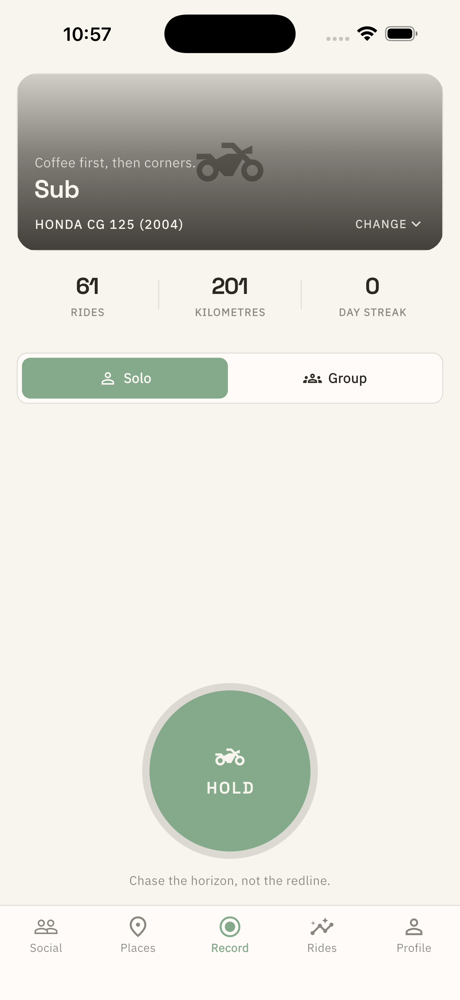
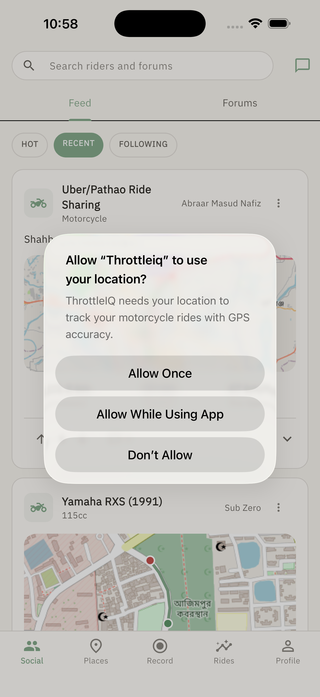
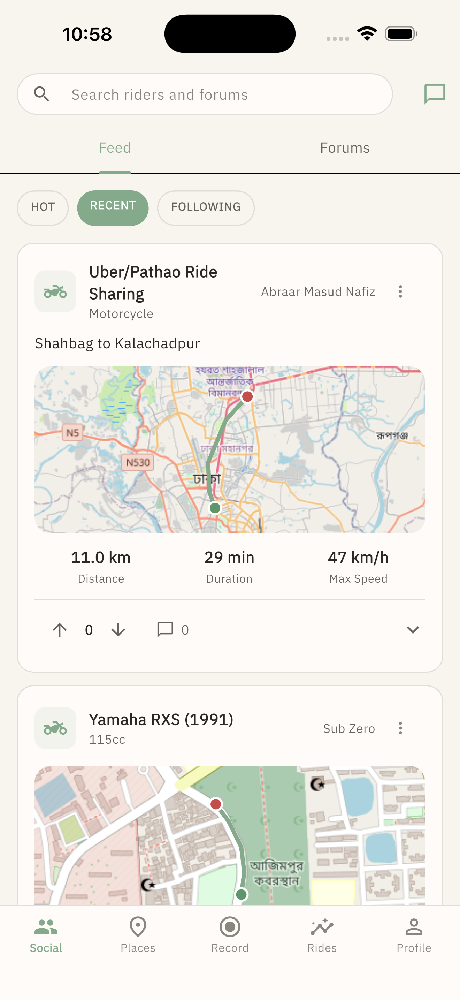

Lighter slider track (surfaceVariant), reduced card vertical space, increased padding above "Ride with friends" button.

CartoDB Dark Matter map theme. Semi-transparent Pause button. Bold, uppercase, wide-tracked data labels (Distance, Avg Speed).

Removed vertical dividers in the stats row to let data breathe.